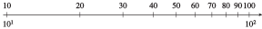
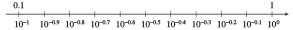
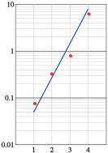

Because logarithmic functions grow very slowly, they are useful for modeling phenomena that take on a very wide range of values. For example, biologists study how metabolic functions such as heart rate are related to an animal’s weight, or mass. The table shows the mass in kilograms of several mammals.
Animal
Shrew
Cat
Wolf
Horse
Elephant
Whale
Mass, kg
\(0.004\)
\(4\)
\(80\)
\(300\)
\(5400\)
\(70,000\)
Imagine trying to scale the \(x\)-axis to show all of these values. If we set tick marks at intervals of \(10,000\) kg, as shown below, we can plot the mass of the whale, and maybe the elephant, but the dots for the smaller animals will be indistinguishable.
On the other hand, we can plot the mass of the cat if we set tick marks at intervals of \(1\) kg, but the axis will have to be extremely long to include even the wolf. We cannot show the masses of all these animals on the same scale
To get around this problem, we can plot the log of the mass, instead of the mass itself. The table below shows the base 10 log of each animal’s mass, rounded to \(2\) decimal places.
Animal
Shrew
Cat
Wolf
Horse
Elephant
Whale
Mass, kg
\(0.004\)
\(4\)
\(80\)
\(300\)
\(5400\)
\(70,000\)
Log (mass)
\(-2.40\)
\(0.60\)
\(1.90\)
\(2.48\)
\(3.73\)
\(4.85\)
The logs of the masses range from \(-2.40\) to \(4.85\text{.}\) We can easily plot these values on a single scale, as shown below.
The scale above is called a logarithmic scale, or log scale. The tick marks are labeled with powers of \(10\text{,}\) because, as you recall, a logarithm is actually an exponent. For example, the mass of the horse is \(300\) kg, and
When we plot \(2.48\) for the horse, we are really plotting the power of \(10\) that gives its mass, because \(10^{2.48} = 300\) kg. The exponents on base \(10\) are evenly spaced on a log scale, so we plot \(10^{2.48}\) about halfway between \(10^2\) and \(10^3\text{.}\)
We actually plot the logs of the values, so we first compute the base \(10\) logarithm of each number.
\(x\)
\(0.0007\)
\(0.2\)
\(3.5\)
\(1600\)
\(72,000\)
\(4 \times 10^8\)
\(\log x\)
\(-3.15\)
\(-0.70\)
\(0.54\)
\(3.20\)
\(4.86\)
\(8.60\)
Then we plot each logarithm, estimating its position between integer exponents. For example, we plot the first value, \(-3.15\text{,}\) closer to \(-3\) than to \(-4\text{.}\) The finished plot is shown below.
Checkpoint5.84.QuickCheck 1.
A value of 5682.7 would be plotted between which two integers on a log scale?
Complete the table by estimating the logarithm of each point plotted on the log scale above. Then use a calculator to give a decimal value for each point.
By now, you have noticed that the values represented by points on a log scale increase rapidly as we move to the right along the scale. Also notice that \(10^0 = 1\text{,}\) so the "middle" of a log scale represents \(1\) (not zero, as on a linear scale).
Points to the left of \(10^0\) represent fractions between \(0\) and \(1\text{,}\) because powers of \(10\) with negative exponents are numbers less than \(1\text{.}\) Their values decrease toward \(0\) as we move to the left, but they never become negative.
We cannot plot negative numbers or zero on a log scale, because the log of a negative number or zero is undefined.
Example5.87.
The figure shows a timeline for life on Earth, in units of Mya (million years ago).
Approximately how long ago did each of the following events occur?
We read from the timeline that the Earth was formed between \(10^3\) and \(10^4\text{,}\) or between \(1000\) and \(10,000\) million years ago. We estimate that Earth formed \(5000\) million years ago.
The extinction of the dinosaurs is plotted between \(10^1\) and \(10^2\text{,}\) or between \(10\) and \(100\) million years ago. Because the point is closer to \(10^2\text{,}\) we estimate their extinction at \(70\) million years ago.
The last ice age is plotted just after \(10^{-2}\text{,}\) or \(0.01\) million years ago. One-hundredth of a million is \(10,000\text{,}\) so we estimate that the ice age occurred a little more than \(10,000\) years ago.
The Crusades occurred about \(10^{-3}\text{,}\) or about \(0.001\) million years ago. One-thousandth of a million is \(1000\text{,}\) so the Crusades occurred about \(1000\) years ago, or about \(1000\) A.D.
Log scales allow us to plot a wide range of values, but there is a trade-off. Equal increments on a log scale do not correspond to equal differences in value, as they do on a linear scale. You can see why in the figure below: The difference between \(10^1\) and \(10^0\) is \(10 - 1 = 9\text{,}\) but the difference between \(10^2\) and \(10^1\) is \(100 - 10 = 90\text{.}\)
If we include tick marks for intermediate values on the log scale, they look like this.
Once again, the difference between, say, \(10^{0.1}\) and \(10^{0.2}\) is not the same as the difference between \(10^{0.2}\) and \(10^{0.3}\text{.}\) The decimal values of the powers \(10^{0.1}\) through \(10^{0.9}\text{,}\) rounded to two places, are shown below.
As we move from left to right on this scale, we multiply the value at the previous tick mark by \(10^{0.1}\text{,}\) or about \(1.258\text{.}\) For example,
On a log scale, the number \(10^{1.5}\) is halfway between \(10^1\) and \(10^2\text{,}\) as shown below.
Now, \(10^{1.5} = 10\sqrt{10}\text{,}\) or approximately \(31.62\text{.}\) Note how equal increments of \(0.5\) on the log scale correspond to equal factors of \(10^{0.5}\) in the values plotted:
On the log scale in Example 5.93, notice how the integer values are spaced: They get closer together as they approach the next power of \(10\text{.}\) You will often see log scales labeled not with powers of \(10\text{,}\) but with integer values, like this:
In fact, log-log graph paper scales both axes with logarithmic scales.
Checkpoint5.94.Practice 4.
The opening page of Chapter 3 shows the “mouse-to-elephant” curve, a graph of the metabolic rate of mammals as a function of their mass. (The elephant does not appear on that graph, because its mass is too big.) The figure above shows the same function, graphed on log-log paper.
Use this graph to estimate the mass and metabolic rate for the following animals, labeled on the graph.
If \(B=100A\text{,}\) the difference between \(A\) and \(B\) on a log scale is 2 units. Use the properties of logarithms to explain why this is true.
SubsectionAcidity and the pH Scale
You may have already encountered log scales in some everyday applications. A simple example is the pH scale, used by chemists to measure the acidity of a substance or chemical compound. This scale is based on the concentration of hydrogen ions in the substance, denoted by \([H^+]\text{.}\) The pH value is defined by the formula
Values for pH fall between \(0\) and \(14\text{,}\) with \(7\) indicating a neutral solution. The lower the pH value, the more acidic the substance. Some common substances and their pH values are shown in the table.
Substance
pH
\([H^+]\)
Battery acid
\(1\)
\(0.1\)
Lemon juice
\(2\)
\(0.01\)
Vinegar
\(3\)
\(0.001\)
Milk
\(6.4\)
\(10^{-6.4}\)
Baking soda
\(8.4\)
\(10^{-8.4}\)
Milk of magnesia
\(10.5\)
\(10^{-10.5}\)
Lye
\(13\)
\(10^{-13}\)
Example5.96.
Calculate the pH of a solution with a hydrogen ion concentration of \(3.98 \times 10^{-5}\text{.}\)
The water in a swimming pool should be maintained at a pH of \(7.5\text{.}\) What is the hydrogen ion concentration of the water?
A decrease of \(1\) on the pH scale corresponds to an increase in acidity by a factor of \(10\text{.}\) Thus, lemon juice is \(10\) times more acidic than vinegar, and battery acid is \(100\) times more acidic than vinegar.
SubsectionDecibels
The decibel scale, used to measure the loudness or intensity of a sound, is another example of a logarithmic scale. The loudness of a sound is measured in decibels, \(D, \) by
where \(I\) is the intensity of its sound waves (in watts per square meter). The table below shows the intensity of some common sounds, measured in watts per square meter.
Sound
Intensity (watts/m\(^2\))
Decibels
Whisper
\(10^{-10}\)
\(20\)
Background music
\(10^{-8}\)
\(40\)
Loud conversation
\(10^{-6}\)
\(60\)
Heavy traffic
\(10^{-4}\)
\(80\)
Jet airplane
\(10^{-2}\)
\(100\)
Thunder
\(10^{-1}\)
\(110\)
Consider the ratio of the intensity of thunder to that of a whisper:
\begin{equation*}
\frac{\text{Intensity of thunder}}{\text{Intensity of a whisper}}
= \frac{10^{-1}}{10^{-10}}= 10^9
\end{equation*}
Thunder is \(10^9\text{,}\) or one billion times more intense than a whisper. It would be impossible to show such a wide range of values on a graph. When we use a log scale, however, there is a difference of only 90 decibels between a whisper and thunder.
Example5.98.
Normal breathing generates about \(10^{-11}\) watts per square meter at a distance of \(3\) feet. Find the number of decibels for a breath \(3\) feet away.
Normal conversation registers at about \(40\) decibels. How many times more intense than breathing is normal conversation?
We let \(I_b\) stand for the sound intensity of breathing, and \(I_c\) stand for the intensity of normal conversation. We are looking for the ratio \(I_c/I_b\text{.}\) From part (a), we know that
Both the decibel model and the Richter scale in the next example use expressions of the form \(\log\left(\dfrac{a}{b}\right)\text{.}\) Be careful to follow the order of operations when using these models. We must compute the quotient \(\dfrac{a}{b}\) before taking a logarithm. In particular, recall that \(\log\left(\dfrac{a}{b}\right)\) is not equivalent to \(\dfrac{\log a}{\log b}\text{.}\)
SubsectionThe Richter Scale
One method for measuring the magnitude of an earthquake compares the amplitude \(A\) of its seismographic trace with the amplitude \(A_0\) of the smallest detectable earthquake. The log of their ratio is the Richter magnitude, \(M\text{.}\) Thus,
The Northridge earthquake of January 1994 registered 6.9 on the Richter scale. What would be the magnitude of an earthquake 100 times as powerful as the Northridge quake?
How many times more powerful than the Northridge quake was the San Francisco earthquake of 1989, which registered 7.1 on the Richter scale?
We let \(A_N\) represent the amplitude of the Northridge quake and \(A_H\) represent the amplitude of a quake \(100\) times more powerful. From the Richter model, we have
We let \(A_S\) stand for the amplitude of the San Francisco earthquake. We are looking for the ratio \(A_S/A_N\text{.}\) First, we use the Richter formula to compute values for \(A_S\) and \(A_N\text{.}\)
The San Francisco earthquake was \(10^{0.2}\text{,}\) or approximately \(1.58\) times as powerful as the Northridge quake.
Checkpoint5.102.Practice 7.
In October 2005, a magnitude 7.6 earthquake struck Pakistan. How much more powerful was this earthquake than the 1989 San Francisco earthquake of magnitude 7.1?
An earthquake \(100\text{,}\) or \(10^2\text{,}\) times as strong is only two units greater in magnitude on the Richter scale. In general, a difference of \(K\) units on the Richter scale (or any logarithmic scale) corresponds to a factor of \(10^K\) units in the intensity of the quake.
Checkpoint5.104.QuickCheck 4.
How much stronger is magnitude 4 earthquake than a magnitude 2 earthquake?
A difference of \(1.6\) on a log scale corresponds to a factor of \(10^{1.6}\) in the actual weights. Thus, the heavier animal is \(10^{1.6}\text{,}\) or \(39.8\) times as heavy as the lighter animal.
Checkpoint5.106.Practice 8.
Two points, labeled \(A\) and \(B\text{,}\) differ by \(2.5\) units on a log scale. What is the ratio of their decimal values?
where \(A\) is the amplitude of its seismographic trace and \(A_0\) is the amplitude of the smallest detectable earthquake.
A difference of \(K\) units on a logarithmic scale corresponds to a factor of \(10^K\) units in the value of the variable.
SubsubsectionSTUDY QUESTIONS
What numbers are used to label the axis on a log scale?
What does it mean to say that a log scale is a multiplicative scale?
Delbert says that \(80\) decibels is twice as loud as \(40\) decibels. Is he correct? Why or why not?
Which is farther on a log scale, the distance between \(5\) and \(15\text{,}\) or the distance between \(0.5\) and \(1.5\text{?}\)
SubsubsectionSKILLS
Practice each skill in the Homework problems listed.
Plot values on a log scale: #1–4, 9 and 10
Read values from a log scale: #5–8, 11–14, 19 and 20
Compare values on a log scale: #15–18
Use log scales in applications: #21–40
ExercisesHomework 5.4
1.
The log scale is labeled with powers of \(10\text{.}\) Finish labeling the tick marks in the figure with their corresponding decimal values.
The log scale is labeled with integer values. Label the tick marks in the figure with the corresponding powers of \(10\text{.}\)

2.
The log scale is labeled with powers of \(10\text{.}\) Finish labeling the tick marks in the figure with their corresponding decimal values.

The log scale is labeled with integer values. Label the tick marks in the figure with the corresponding powers of \(10\text{.}\)
3.
Plot the values on a log scale.
\(x\)
\(0.075\)
\(1.3\)
\(4200\)
\(87,000\)
\(6.5\times 10^7 \)
4.
Plot the values on a log scale.
\(x\)
\(4\times 10^{-4} \)
\(0.008\)
\(0.9\)
\(27\)
\(90 \)
5.
Estimate the decimal value of each point on the log scale.
6.
Estimate the decimal value of each point on the log scale.
7.
The log scale shows various temperatures in Kelvins. Estimate the temperatures of the events indicated.
8.
The log scale shows the size of various objects, in meters. Estimate the sizes of the objects indicated.
9.
Plot the values of \([H^+]\) in the section "Acidity and the pH Scale" on a log scale.
10.
Plot the values of sound intensity in the section "Decibels" on a log scale.
11.
The magnitude of a star is a measure of its brightness. It is given by the formula
\begin{equation*}
m = 4.83 - 2.5 \log L
\end{equation*}
where \(L\) is the luminosity of the star, measured in solar units. Calculate the magnitude of the stars whose luminosities are given in the figure.
12.
Estimate the wavelength, in meters, of the types of electromagnetic radiation shown in the figure.
13.
The risk magnitude of an event is defined by \(R = 10+ \log p\text{,}\) where \(p\) is the probability of the event occurring. Calculate the probability of each event.
The sun will rise tomorrow, \(R = 10\text{.}\)
The next child born in Arizona will be a boy, \(R = 9.7\text{.}\)
A major hurricane will strike North Carolina this year, \(R = 9.1\text{.}\)
A 100-meter asteroid will collide with Earth this year, \(R = 8.0\text{.}\)
You will be involved in an automobile accident during a 10-mile trip, \(R = 5.9\text{.}\)
A comet will collide with Earth this year, \(R = 3.5\text{.}\)
You will die in an automobile accident on a 1000-mile trip, \(R=2.3\)
You will die in a plane crash on a 1000-mile trip, \(R = 0.9\text{.}\)
14.
Have you ever wondered why time seems to pass more quickly as we grow older? One theory suggests that the human mind judges the length of a long period of time by comparing it with its current age. For example, a year is \(20\%\) of a \(5\)-year-old’s lifetime, but only \(5\%\) of a \(20\)-year-old’s, so a year feels longer to a \(5\)-year-old. Thus, psychological time follows a log scale, like the one shown in the figure.
Label the tick marks with their base \(10\) logarithms, rounded to \(3\) decimal places. What do you notice about the values?
By computing their logs, locate \(18\) and \(22\) on the scale
Four years of college seems like a long time to an \(18\)-year-old. What length of time feels the same to a \(40\)-year-old?
How long will the rest of your life feel? Let \(A\) be your current age, and let \(L\) be the age to which you think you will live. Compute the difference of their logs. Now move backward on the log scale an equal distance from your current age. What is the age at that spot? Call that age \(B\text{.}\) The rest of your life will feel the same as your life from age \(B\) until now.
Compute \(B\) using a proportion instead of logs.
15.
What number is halfway between \(10^{1.5}\) and \(10^2\) on a log scale?
What number is halfway between \(20\) and \(30\) on a log scale?
16.
What number is halfway between \(10^{3.0}\) and \(10^{3.5}\) on a log scale?
What number is halfway between \(500\) and \(600\) on a log scale?
17.
The distances to two stars are separated by \(3.4\) units on a log scale. What is the ratio of their distances?
18.
The populations of two cities are separated by \(2.8\) units on a log scale. What is the ratio of their populations?
19.
The probability of discovering an oil field increases with its diameter, defined to be the square root of its area. Use the graph to estimate the diameter of the oil fields at the labeled points, and their probability of discovery. (Source: Deffeyes, 2001)
20.
The order of a stream is a measure of its size. Use the graph to estimate the drainage area, in square miles, for streams of orders \(1\) through \(4\text{.}\) (Source: Leopold, Wolman, and Miller)

Exercise Group.
In Problems 21–40, use the appropriate formulas for logarithmic models.
21.
The hydrogen ion concentration of vinegar is about \(6.3\times 10^{-4}\text{.}\) Calculate the pH of vinegar.
22.
The hydrogen ion concentration of spinach is about \(3.2\times 10^{-6}\text{.}\) Calculate the pH of spinach.
23.
The pH of lime juice is \(1.9\text{.}\) Calculate its hydrogen ion concentration.
24.
The pH of ammonia is \(9.8\text{.}\) Calculate its hydrogen ion concentration.
25.
A lawn mower generates a noise of intensity \(10^{-2}\) watts per square meter. Find the decibel level of the sound of a lawn mower.
26.
A jet airplane generates \(100\) watts per square meter at a distance of \(100\) feet. Find the decibel level for a jet airplane.
27.
The loudest sound emitted by any living source is made by the blue whale. Its whistles have been measured at \(188\) decibels and are detectable \(500\) miles away. Find the intensity of the blue whale’s whistle in watts per square meter.
28.
The loudest sound created in a laboratory registered at \(210\) decibels. The energy from such a sound is sufficient to bore holes in solid material. Find the intensity of a \(210\)-decibel sound.
29.
At a concert by The Who in 1976, the sound level \(50\) meters from the stage registered \(120\) decibels. How many times more intense was this than a \(90\)-decibel sound (the threshold of pain for the human ear)?
30.
The loudest scientifically measured shouting by a human being registered \(123.2\) decibels. How many times more intense was this than normal conversation at \(40\) decibels?
31.
The pH of normal rain is \(5.6\text{.}\) Some areas of Ontario have experienced acid rain with a pH of \(4.5\text{.}\) How many times more acidic is acid rain than normal rain?
32.
The pH of normal hair is about \(5\text{,}\) the average pH of shampoo is \(8\text{,}\) and \(4\) for conditioner. Compare the acidity of normal hair, shampoo, and conditioner.
33.
How much more acidic is milk than baking soda? (Refer to the table in this section.)
34.
Compare the acidity of lye and milk of magnesia. (Refer to the table in this section.)
35.
In 1964, an earthquake in Alaska measured \(8.4\) on the Richter scale. An earthquake measuring \(4.0\) is considered small and causes little damage. How many times stronger was the Alaska quake than one measuring \(4.0\text{?}\)
36.
On April 30, 1986, an earthquake in Mexico City measured \(7.0\) on the Richter scale. On September 21, a second earthquake, this one measuring \(8.1\text{,}\) hit Mexico City. How many times stronger was the September quake than the one in April?
37.
A small earthquake measured \(4.2\) on the Richter scale. What is the magnitude of an earthquake three times as strong?
38.
Earthquakes measuring \(3.0\) on the Richter scale often go unnoticed. What is the magnitude of a quake \(200\) times as strong as a \(3.0\) quake?
39.
The sound of rainfall registers at \(50\) decibels. What is the decibel level of a sound twice as loud?
40.
The magnitude, \(m\text{,}\) of a star is a function of its luminosity, \(L\text{,}\) given by
\begin{equation*}
m = 4.83 - 2.5 \log L
\end{equation*}
If one star is \(10\) times as luminous as another star, is the difference in their magnitudes?